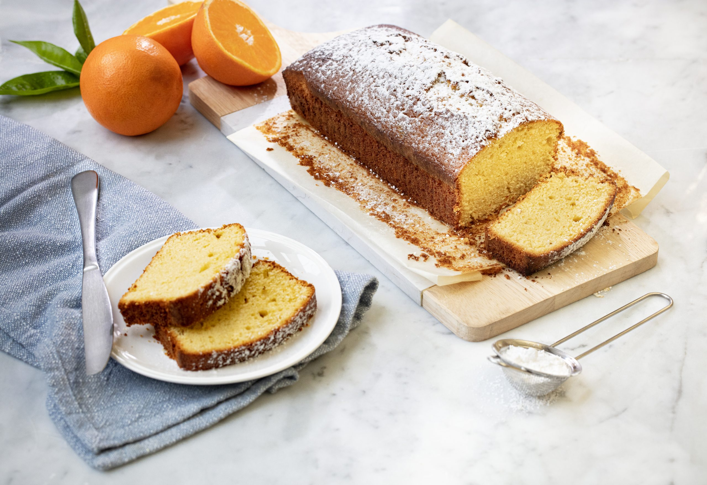

Receta de Budín de Naranja

Descripción
El budín es un tipo de alimento, generalmente un postre, que puede ser dulce o salado y que se prepara con pan, bizcocho, arroz, sémola u otros ingredientes mezclados con leche y/o huevo. El budín se caracteriza por su consistencia cremosa y por ser horneado o cocinado en baño de maría.
Ingredientes
- 1 1/2 taza de azúcar
- 2 huevos
- 2 tazas de harina sin polvos
- Ralladura de una naranja
- 1/2 taza de aceite
- 1 taza de jugo de naranja
- 1 cucharadita de polvos para hornear
Preparación
Pasos
- Precalentar el horno a 180 grados por 20 minutos.
- En un bol, cernir el harina con los polvos de hornear.
- Batir el azúcar con el aceite, agregar los huevos de a uno, luego agregar 1 taza de harina/polvos -previamente cernidos-, media taza de jugo de naranja y la siguiente taza de harina/polvos y finalmente el resto del jugo y la ralladura de naranja.
- Aceitar un molde y agregar la mezcla. Luego llevarlo al horno por 40 minutos.
¡Listo! a disfrutar.
Pagina Principal